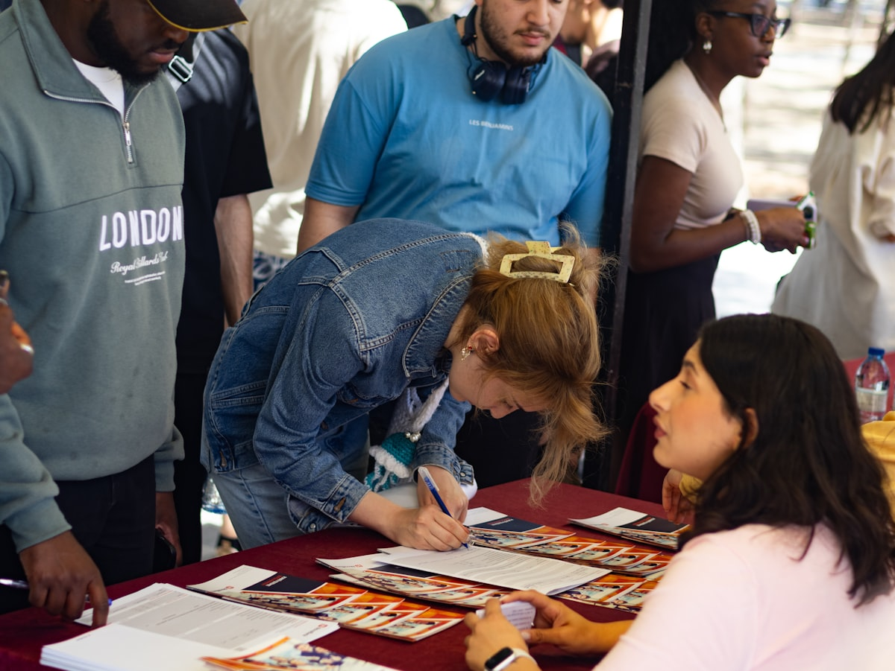

Institucional
Taller de finanzas para emprendedores
La facultad organizó un taller práctico dirigido a estudiantes con proyectos propios.
La facultad organizó un taller práctico dirigido a estudiantes con proyectos propios.
Un equipo de la facultad obtuvo reconocimiento en un concurso de gestión de proyectos.
Nuevo convenio con una empresa local amplía las oportunidades de práctica.

Representantes de la facultad expusieron investigaciones en gestión pública.

La inversión busca mejorar la formación práctica en herramientas de gestión.

Un conversatorio acercó a los estudiantes al mundo profesional real.

Estudiantes voluntarios participaron en una jornada de proyección social.

Facilitará pasantías y proyectos conjuntos con el sector empresarial.

Escolares de la región conocieron la oferta académica de la facultad.

El estudio analiza el impacto de la gestión formal en la sostenibilidad de las mypes.